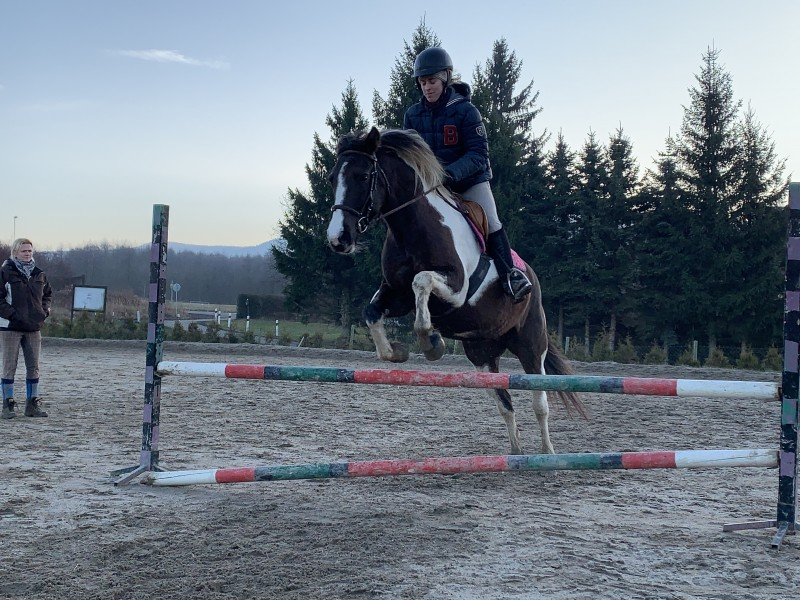

Těchto závodů se účastnila: V první soutěži, křížky do 50 cm, Majda s lordem. V druhé soutěži, do 60 cm, lord s Majdou, Rocky se Šadlotkou a Zorro s Klárkou.
Ve třetí soutěži, do 70cm, jela opět Klárka se Zorrem a Šarlotka s Rockym, přidalal se k nim ještě Kristý s Biankou. Kristý se umístila na 1. místě a Šarlotka na 5. místě.
V soutěžích do 80cm jela Kristýna s Biancou, Ája s Montym a Natálka se Silver. Kristý s Biankou se umístili na prvním místě
V soutěžích do 90cm jela Ája s Montym
Sobotka
Dne 3.7 jsme se zúčastnili Závodů v Sobotce
Těchto závodů se účastnila: V první soutěži, křížky do 50 cm, Majda s lordem. V druhé soutěži, do 60 cm, lord s Majdou, Rocky s Klárkou a Zorro s Tínkou. Z této soutěže si Klárka odnesla 1. místo a Tínka se umístila na 7. místě.
Ve třetí soutěži, do 70cm, jela opět Tínka se Zorrem a Klárka s Rockym. Tínka se umístila na krásném 5. místě
V soutěžích do 80cm a 90cm jela Kristýna s Biancou. Z obou soutěží si odvezly 3. místo
Sobotka
Dne 3.7 jsme se zúčastnili závodů v Sobotce
Těchto závodů se účastnila: V první soutěži, křížky do 50 cm, Majda s lordem. V druhé soutěži, do 60 cm, lord s Majdou, Rocky s Klárkou a Zorro s Tínkou. Z této soutěže si Klárka odnesla 1. místo a Tínka se umístila na 7. místě.
Ve třetí soutěži, do 70cm, jela opět Tínka se Zorrem a Klárka s Rockym. Tínka se umístila na krásném 5. místě
V soutěžích do 80cm a 90cm jela Kristýna s Biancou. Z obou soutěží si odvezly 3. místo
Pohár Českého ráje
V sobotu 21.5. jsme se zúčastnili prvního kola Poháru Českého ráje.
Tyto závody jsme jeli v sestavě: Majda, Jana a Kipp, Klárka a Lord,
Šarlotka a Rocky, Natálka a Silver, Barča a Bianka a Tínka s Devronem.
Offika Nymburk
Jela Barča s Biankou a Tínka s Devronem. Obě dvojce startovali v soutěžích
ZM a Z. Barča s Biankou si v soutěži ZM na limitovaný čas dojely pro 4.místo. Tínka s Devronem si v
soutěži Z na čas dojeli pro krásné 1.místo.
Tyto závody byly velmi vydařené a holky byly se svými výkony spokojeny.
Hnanice
V neděli 24.4. jsme se zúčastnili hobby závodů v Hnanicích.
Jela Majda s Kippem, Šarlotka s Rockym, Jana s Lordem, Tínka se Zorrem,
Natálka se Silver, Kristý s Biankou a Hanka s Betty.
Sobotka
16.4. jsme v Sobotce úspěšně zahájili Sezonu 2022
Tyto závody jeli i naši nejmladší poníci a velice se jim dařilo. V soutěži
do 60 cm s návazným rozeskakováním se na 2. místě, umístila Šarlotka s Rockym a na 3. místě se
umístila Klárka s Lordem. V soutěži do 70 cm s návazným rozeskakováním se na 4. místě, umístila
Tínka se Zorrem. Tuto soutěž jela i Natálka se Silver, ale bohužel udělaly chybu na prvním skoku.
Další soutěž ale zajely čistě a moc hezky.
Tyto závody byly opravdu moc vydařené a my se těšíme na další návštěvu.
2021
Hnanice
V neděli 17.10. jsme se zúčastnili posledních hobby závodů v Hnanicích.
Jela Majda a Janča s Kippem a Natálka se Silver.
Majda jela parkur do 60 cm, odjeli krásný parkur ale na umístění to
nestačilo. Natálka se Silver jely parkur do 60 cm a do 70 cm. Oba parkury odjely hezky a v klidu.
Janča jela parkur do 90 cm a umístila se na 2. místě.
Pro letošní rok se s Hnanicemi loučíme a těšíme se na další návštěvu.
Ústí nad Labem
10.10. 2021 se konaly oficiální závody v Ústí nad Labem, Tuto stáj jme
navštívili již po druhé a jsme velice spokojeni, kromě opravdu složitého parkuru, který je na druhou
stranu výzvou, se nám zde opravdu líbí, i když né až tolik daří, každopadně těšíme se a další
návštěvu této krásné a přívětivé jízdárny.
Závodili: Barča s Markusem a Tína s Devronem
Sobotka
V neděli 26.9. jsme vyjeli na hobby závody do Sobotky. Jela Majda a Róza s
Kippem, Klárka a Šarlotka s Biankou, Natálka se Silver a Barča s Markusem. Majda jela křížkový
parkurek do 60 cm, jeli to moc hezky a nebýt jednoho vyhnutí bylo by to dokonalé. Róza jela soutěž
70/80, kde s kippem předvedli bezchybný parkur s velmi rychlých rozeskakováním a nakonec jim to
vyneslo 2. místo. Klárka jela s Biankou stejnou soutěž jako Róza a předvedla taktéž bezchybný a
rychlý výkon a nakonec porazila svou stájovou kolegyni a tuto soutěž vyhrála! Šarlotka jela s
Biankou soutěž 70cm a čistou jízdou vybojovala krásné 2. místo. Natálka se Silver se zúčastnily
prvních letošních závodů. Zajely jí krásně v klidu a čistě, bohužel tato soutěž se jela na čas, a
tak se neumístily. Pro nás však bylo důležité jak soutěž odjeli a dostaly tak velkou pochvalu!
Barunka s Markusem jeli soutěže ZM a Z. Oba parkury odjeli moc hezky, v soutěži Z zabojovali, odjeli
krásný a rychlý parkur a nakonec brali nádherné 3. Místo!
Tyto závody byly opravdu moc vydařené a my doufáme, že to všechny
motivovalo do další práce!
Finále Poháru českého ráje
18.9. se konalo Finále Poháru Čejského ráje, z Vydlákova se zúčastnila
Eliška s Biankou, Majda a Róza s Kippem, Tínka s Devronem a Barča s Markusem. Majda jela na své
první závody, jeli s Kippem soutěž 70 cm a zhostili se toho na výbornou. Róza jela s Kippem soutěž
ZZ, parkurek jeli moc hezky, ale bohužel trochu zabloudili, a tak měli nějaké trestné body. Eliška s
Biankou jela ZZ a ZM, první parkur zajely čistě, bohužel měly větší odchylku od limitovaného času, a
tak se neumístily. Soutěž ZM dojeli čistě a nakonec skončily na krásném 4.místě. Barunka s Markusem
a Tínka s Devronkem soutěžili ve stupni Z a postupce do 110 cm. Parkury byly celkem obtížně
postavené, ale holky se s tím popraly statečně. Tínka s Devronkem se ve stupni Z umístili na 6.
místě a nasbírali tak cenné body, které je nakonec vyhouply na konečné 5. místo celkového bodování!
Pro letošní rok se s Jičínem loučíme a budeme se těšit na další rok!
Licence
V sobotu 4.9.2021 úspěšně složil Radim s Nerem zkoušku základního výcviku
jezdce a tímto vstoupil mezi jezdce, kteří se mohou účastnit officiálních závodů. A my tímto přejeme
Radimovi hodně úspěchů a vstup do další etapy jezdecké kariéry.
Zálesí
Dne 7.8.2021 se Jana s Biankou a Barča s Markusem zúčastnili závodů v
Zálesí.
Jana s Biankou se v 70/80 cm umístily na 8.místě z 31 dvojic.
Druhý parkur stupně ZM na limitovaný čas odjely čistě ale s velmi rychlým
časem. Tento parkur odjela i Barča s Markusem taktéž čistě a umístili se na 11.místě z 39
dvojic.Následovala soutěž stupně Z kde si Barča s Markusem dojeli pro 9.místo z 27 dvojic.
Obě holky byly se svými výkony spokojeny a těšíme se na další návštěvu
Zálesí.
Sobotka
Dne 24.7.2021 se Kristý, Klárka, Bianka a Andrejka s Monty zúčastnili
hobby závodů v Sobotce.
Kristý s Biankou startovaly v obtížnosti do 70 cm s návazným
rozeskakováním ve kterém se umístily na
5. místě.
Klárka s Biankou startovaly v obtížnosti do 80 cm s návazným
rozeskakováním ale v základní části
přišel pád a dvojce byla vyloučena. Ale příští závody určitě budou lepší a na berou další zkušenost.
Andrejka s Montym startovali v obtížnosti do 90 cm a do 100 cm s návazným
rozeskakováním. Oba
parkury se jim moc povedly. Monty není úplně jednoduchý koník na ježdění a proto jsme měli všichni
velkou radost, když oba parkury zajely. Těšíme se na další návštěvu Sobotky.
Sea Plane
Bohužel musíme oznámit, že nás dne 22.7. 2021 opustila kobylka Sea Plane.
Dožila se 23 let. Věříme, že jí u nás bylo hezky a doufáme, že se jí v nebíčku bude líbit.
Oficiální závody JK Vacek
Dne 17.7.2021 se zúčastnila Tínka s Devronem a Barča s Markusem
oficiálních závodů v Jk Vacek ( Bělá pod Bezdězem ).
Obě dvojce startovaly v obtížnosti ZM na limitovaný čas (90) a Z s návazným rozeskakováním (100).
Barča s Markusem zajeli oba parkury pěkně ale nestačilo to na umístění.
Tínka s Devronem zajeli oba parkury čistě a 2x se umístili na 1.místě.
Byl to velmi vydařený den a holky byly spokojené jak zajely své parkury.
Těšíme se na další návštěvu Páterova.
Pohár Českého ráje
3.6.2021 se konalo druhé kolo Poháru Českého Ráje. Zúčastnila se Eliška s
Biankou, Andrejka s Montym a Tínka s Devronem. Eliška s Biankou jely parkur stupně ZZ a ZM, druhý
parkur se jim moc povedl, a tak dokončily na krásném 8. místě. Pro Andrejku a Montyho to nebyly
nejpovedenější závody, ale my jim i přesto věříme a příště určitě bude lépe. Tínka s Devronkem jeli
parkur stupně Z a postupku do 110. V parkuru stupně Z se dlouho drželi na prvním místě, nakonec však
skončili druzí, protože se ještě jeden soutěžící přiblížil více limitovanému času. V postupce poté
přišly 2 chybky, ale parkur byl složitý a na mírách. Držíme všem holkám palce a určitě se uvidíme na
finálovém kole Poháru Českého Ráje.
JK Komárno Nymburk
Dne 19.6.2021 se Janča s Biankou a Tínka s Devronem zúčastnili závodů v Jk
Komárnu v Nymburce. Janča s Biankou startovaly v soutěži 80/90 cm a ZM (90), v této soutěži také
startovala i Tínka s Devronem a následně startovala i v soutěži Z (100) . Janče s Biankou se v
prvním parkuru docela dařilo ale na posledním skoku základního kola přišla chyba. V soutěži ZM (90)
na limitovaný čas, předvedly bezchybnou jízdu ale s pomalým časem, který nestačil na umístění. Tuto
soutěž jela i Tínka s Devronem, kteří před posledním skokem nešťastně uklouzli a za kruh, který si
udělali, dostali 4 tr. body. V soutěži Z (100) předvedli pěkný výkon, ale bohužel na posledním skoku
před rozeskakováním udělali chybu. I přes velké horko a unavu, byly holky se svými výkony spokojeny
a těšíme se na další návštěvu.
POHÁR ČESKÉHO RÁJE
Dne 29.5.2021 jsme se zúčastnili prvního kola POHÁRU ČESKÉHO RÁJE. Jela
Eliška s Biankou, Tínka s Devronem a Andrejka s Montym. Jeli soutěže ZZ (80), ZM (90) a Z (100).
Byly to první závody po hodně dlouhé době a to hlavně díky coronavirové situaci. Počasí nám přálo a
atmnosféra bylA jako vždy skvělá. Tak snad jsme letošní sezonu úspěšně zahájili a budeme sbírat
další a další zkušennosti.
Nový koník
Jelikož špatných zpráv už bylo dost,tak teď jednu radostnou novinku. Dne
20.1.2021 jsme si přivezli do stáje nového koňského parťáka do našeho klubu. Jmenuje se Zorro a je
to 4letý valášek plemene Hucul. Doufáme, že se mu u nás bude dařit a dělat všem jen radost.
Fjordík
Bohužel musíme oznámit, že nás dne 11.1. 2021 opustil nás koňský přítel,
poníček Fjord. Dožil se necelých 27 let. Věříme, že mu u nás bylo hezky a dofáme že se mu v nebíčku
bude líbit.
PF 2021
Je tu Nový Rok a my bychom vám chtěli všem popřát všechno nejlepší, hodně
úspěchů s našimi koňskými kamarády a hlavně zdravíčko. Doufáme, že se i přes situaci, která u nás v
čechách stále panuje se podíváme na nějaké závody a budeme moct zažít spoustu zábavy na různých
společných akcích u nás ve stáji.
2020
Pepa
Bohužel musíme oznámit, že nás dne 10.12. 2020 opustil koníček Missouri To
Impress (Pepa). Věříme, že se mu u nás líbilo a doufáme, že mu v nebi bude hezky.
ZÁVODY VYDLÁKOV
Dne 3.10.2020 jsme měli naše stájové vydlákovské závody. Soutěžilo se ve 4
soutěžích : jízda zručnosti, která byla rozdělená na děti a dospělé, parkurek pro nejmenší, parkur
do 70 cm a parkur do 90 cm se žolíkem. Letošní ročník byl velmi hojný na účast, zúčastnili se i koně
ze sousedské stáje, z Chotyně či Vítkova. Celý den byla úžasná atmotféra a všichni jsme si to moc
užili a to i díky počasí, které nám letos dokonale vyšlo.
Rafty 20.9
POHÁR ČESKÉHO RÁJE - FINÁLE
Dne 19.9.2020 jsme se zúčastnili třetího a zároveň finálového kola
POHÁRU ČESKÉHO RÁJE. Jelo se ve složení Radim s Nerem, Terka s Monou, Eliška s Kippem a Tínka s
Biankou. V první soutěži se na 5. místě umístila Terka s Monou. V soutěži ZZ se dařilo všem, ale
největší úspěch zaznamenal Radim s Nerem, kteří svůj první závodní rok v poháru zakončili
úžasným prvním místem z 26 koní! Eliška s Kippem se zúčastnili soutěží ZZ a ZM, které bohužel
nedopadly úplně nejlépe, ale oba to zvládli bez větších karambolů. Tínka s Biankou startovala v
soutěži Z a v jejich prvním společném ZL, kterou zvládly bravůrně, Tínka zapsala cenné body do
tabulky a tak brala krásné celkové 4. místo ze všech pohárových kol a v hojné účasti mnoha
závodníků. Tímto jsme se pro letošní rok rozloučili z jedním z našich oblíbených závodišť a
těšíme se na další povedený ročník v příštím roce.
Dne 12.9.2020 se konaly závody na Centraranči. Letošní ročník byl
velmi hojný, jen z naší stáje se celkem zúčastnilo 11 koní. Úplně poprvé se také vyjeli podívat
mimo stáj naši nejmladší poníčci a vedli si opravdu skvěle! Soutěžilo se v 6 soutěžích - jízda
zručnosti, drezurní úloha Z1, drezurka pro nejmenší, parkurek pro děti do 12 let, parkur do 60
cm a parkur do 90 cm.
V sobotu 5.9. se 5 holek od nás z klubu zúčastnilo zkoušek základního
výcviku jezdce v JK Liberec. Všechny holky se na tuto zkoušku dlouho dopředu připraovaly aby se
mohly pounout v jezdectví zase o krůček dál a vstoupily tak mezi jezdce, kteří se mohou účastnit
officiálních závodů. Připravovaly se na třech koních a to na Biance, Kippovi a Nerovi. Holky do
toho daly všechno a i když se každé z nich něco málo nepovedlo, nebyla to žádná ostuda a i přes
všechen stres to nakonec všechny zvládly. Přeje jim tímto spoutu dalších úspěchů a povedený
vstup do další etapy v jejich jezdeckých kariérách.
Závody Jičín
V sobotu 22.8. jsme se zúčastnily se čtyřmi koňmi hobby + offi závodů
v Jičíně. Soutěže 70cm a 80cm se zúčastnil Radim s Nerem a Terka s Monou. V první soutěži se
Radim umístil na 2. místě a Terka na 3. místě, ve druhé soutěži měli oba po 1 chybě. Eliška s
Biankou jela soutěž 80cm, kterou odjely čistě avšak bohužel moc rychle a soutěž 90cm, kde
udělaly 2 chyby. Tínka s Devronkem jeli soutěže Z a postupku do 110. V soutěži Z se dostali až
do rozeskakování, kde kdyby na posledním skoku neschodili, tak by se účastnili dekorování. V
druhé soutěži už dolehla únava a velké teplo, které celý den panovalo, ale aspoň víme na čem dál
pracovat
Hobby + Offi závody Jičín-Sedličky 15.8.2020
V sobotu 15.8. jsme se zúčastnili hobby+ offi závodů v Jičíně. Na start se
postavil Radim s Nerem v soutěžích 70cm a 80cm a holky Barunka s Markusem a Andrejka s Montym v
soutěžích 90cm a Z. Bohužel to nebyly jedny z nejpovedenějších závodů i vzhledem k dlouhému čekání
na jednotlivé starty, ale pevně věříme, že příště se všem bude dařit mnohem lépe a bereme to jako
další zkušenosti.
Officiální závody Jitrava
Dne 11.7. se konaly úplně první závody v Jitravě. Od nás se závodů
zúčastnila Barča s Markusem a Janča s Kippem. Tyto závody se holkám bohužel moc nepodařily, ale
i to jsou zkušennosti a holkám se určitě příště bude dařit lépe.
Závody v Jičíně
Dne 6.7.2020, Terka s Monou, Radim s Nerem, Eliška s Biancou a Tína s
Devronem vyjeli do jezdeckého centra Jičín. Domů si odvezli mašličku jen Tínka s Devronem za šesté
místo v ZM, ale všem se tam velice dařilo a nebýt drobných chybek a zaváhání byla doma i jedna zlatá
a stříbrná. Jako vždy se nám tam moc líbilo a těšíme se i na příště.
Offi závody Páterov
Dne 27.6.2020 se Tínka s Devronem zůčastnili officiálních závodů v JK
Páterov v Bělé. Šli parkury stupně ZM a Z.
V soutěži ZM na limitovaný čas se umístili na prvním místě, v Soutěži Z na rozeskakování předvedli
taktéž skvělý výkon, bohužel na posledním skoku přišla chyba, která je stála první místo.
Offi závody Vrchovany
Dne 13.6.2020 se Andrejka a Barča zůčastnily officiálních závodů v JK
Vrchovany. Holky se snažily a na první výjezd se závody povedy, ale bohužel nedosáhli oceňovaných
pozic. Naše první návštěva Vrchovanů byla skvělá a z areálu jsme víc než spokojení.
Skok do nového roku
Dne 1.1.2020 se u nás konal stájový skok do nového roku. Odpoledne jsme se
ve stáji všichni sešli, abychom společně zahájili další rok s našimi koníky. Účast byla hojná,
skočili si i ti nejstarší a jak se říká.... Jak na nový rok, tak po celý rok. Letost by to měl být
velice úspěšný rok. Některé holky se chystají skládat jezdeckou licenci a my jim tak přejeme hodně
štěstí a věříme, že se holkám vše povede.

2019
Vánoční večírek
Dne 21.12.2019 se jako i předešlý rok konal vánoční večírek. Účast byla
veliká, příští rok asi budeme muset změnit prostory, protože už to letos bylo dost na těsno a pokud
se nám ještě někdo přidá do týmu, tak už by neměl kde sedět. Všichni jsme si to moc užili, popili
jsme, pojedli a samožřejmě nesměla chybět ani čokoládová fontána, kterou si nejvíce užila asi naše
Majdičja, která měla čokoládu snad úplně všude.
Hobby závody JS Vydlákov
Dne 2.11.2019 se u nás ve Vydlákově konaly naše tradiční hobby sranda
závody. Účas byla hojná, byšlo nám i krásné počasí a moc jsme si to všichni užili. Navštívili nás i
holčiny z vedlejší stáje, a tak jsme si mohli alespoň trošku zazávodit s otatními. Letos se na start
také postavili už i ti nejmladší poníčci a ukázali, že máme do budoucna skokvé naděje.
V neděli 1.9.2019 se Eliška s Nerem zúčastnili závodů v Ústí nad Labem.
Startovali v soutěžích ZZ a ZM.
Offi závody Jk Vacek
Dne 31.8.2019 jsme se zúčastnili závodů v Jk Vacek.
Start v ZM a Z
Tínka a Devron
Barča a Markus
Andrejka a Monty
Jana a Leukippos
Offi závody Jk Zálesí
V sobotu 3.8.2019 jsme se zúčastnili závodů v Zálesí.
Start v ZM a Z
Barča a Markus
Andrejka a Monty
Jana a Leukippos
Hobby závůdky ve Vydlákově
11.5. se naše stáj zúčastnila hobby závůdků v Chotyni u Hrádku nad Nisou.
23.6. se u nás ve stáji konaly hobby závůdky jako každý rok. A na podzim
se u nás budou konat znovu, určitě doražte. Těšíme se na vás.
závodilo se v soutěžích:
jízda zručnosti
křížkový parkur
parkur do 70 cm
parkur do 90 cm
Offika Jičín
Dne 15.6. jsme se zúčastnili závodů v Jičíně.
Eliška se s Nerem umístila na 1. místě a Terka s Monou na 4. místě v
soutěži do 70cm.
Start v 70cm a 80cm
Eliška a Nero
Terka a Mona
Start v ZM a Z
Barča a Markus
Tínka a Devron
Offika Čakovičky
Dne 2.6. jsme se zúčastnili závodů v Čakovičkách.
Barča se v ZM umístila s Marcusem na 1. místě a Andrejka s Montym na 2.
místě
Start v ZM a Z
Barča a Markus
Andrejka a Monty
Tínka s Devronem a Biankou
Hobby Stará Boleslav
19.5. jsme se zúčastnili hobby závodů ve Staré Boleslavi.
Barča se v 70/80 cm umístila s Marcusem na 3. místě
Start v 70/80 cm a 80/90 cm
Barča a Markus
Andrejka a Monty
Terka a Mona
Eliška a Nero
Offika Stará Boleslav
Dne 18.5. jsme se zúčastnili závodů ve Staré Boleslavi.
Start v ZM a Z:
- Tínka s Devronem a Biankou
Janča s Doremi of Jacs a Kippem
Hobby závůdky Centaranč
11.5. se naše stáj zúčastnila hobby závůdků v Chotyni u Hrádku nad
Nisou.
Moc jsme si to všichni užili a těšíme se zase příští rok.
závodilo se v soutěžích:
jízda zručnosti
křížkový parkur
parkur do 70 cm
parkur do 90 cm
Officiální závody Nymburk
27.4. se Tínka s Biankou a Jana s Lady zůčastnily závodů v Nymburku.
Startovaly jsme v obtížnosti ZM na limitovaný čas kde Tínka s Biankou
jely
čistě ale čas byl pro umístění moc rychlý a Jana s Lady za 4.tr. body. Další parkur stupně Z s
návazným rozeskakováním dopadl, umístěním Tínky a Bianky na 5.místě a 4.tr. body v rozeskakování
pro
Janu a Lady.
Myslím, že v Nymburku se nám moc líbilo, prostředí bylo fajn, kobylky
skákaly parádně a těšíme se na další závody.